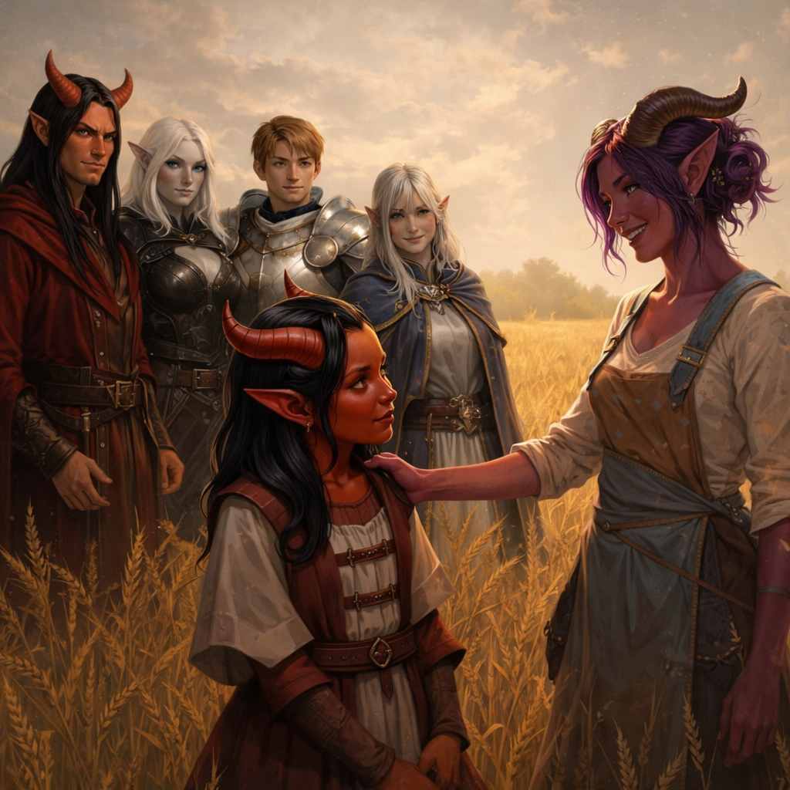
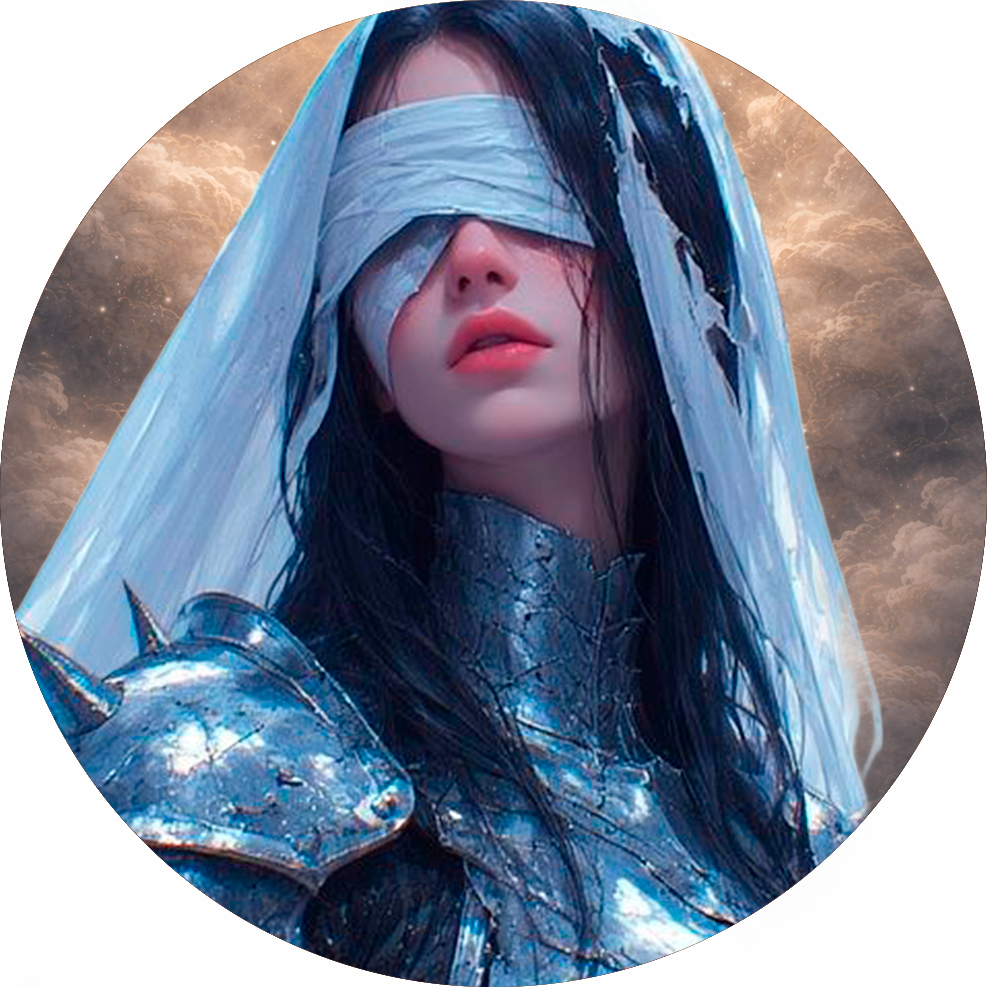
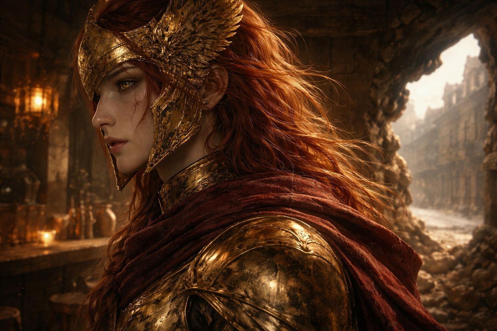
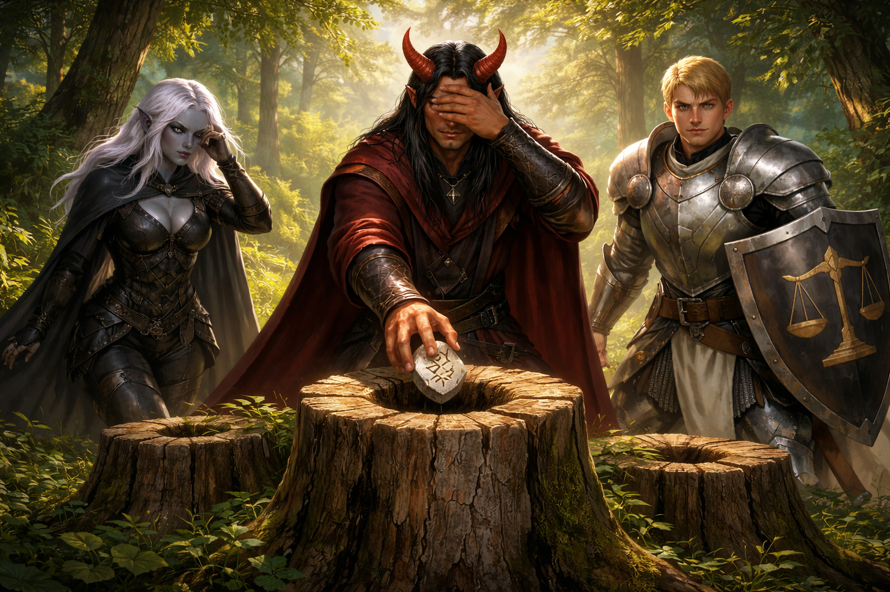

S01 - O Começo

O grupo se conheceu ao se inscrever na Guilda dos Aventureiros. Uruk, líder da Guilda, tinha o hábito de unir recém-chegados em equipes, acreditando que aventureiros em grupo sobreviviam mais tempo.
O primeiro contrato levou-os ao templo de Ûlfred, o Bravo. Durante a missão, enfrentaram indivíduos sob influência de algo que não sabiam nomear. Ao final, não levaram todos os corpos - o que resultou no pagamento parcial da recompensa.
Ao retornarem à Guilda, ouviram uma discussão entre Aya e Zack. Em seguida, Uruk ofereceu um novo contrato: investigar desaparecimentos na vila Tiefling - uma oportunidade de se estabelecerem na Guilda.
Na vila, encontraram Trudd, Escolhido de Mirella, que já investigava os acontecimentos, sem sucesso. Na mesma noite, Aya pediu ajuda: Tikka havia desaparecido.

O grupo impediu o pior, mas o sussurro permaneceu. Aya revelou que sabia do risco por causa de um desenho de três bocas - associado ao chamado “alinhamento forçado”, que viu no templo de Alberon. Ao observarem o desenho, os sussurros se intensificaram, como se exigissem que alguém cedesse. Num impulso, rasgaram o papel, e a influência cessou.
Trudd, ao ver o símbolo, declarou ter compreendido o que estava acontecendo e partiu para o templo de Alberon. O grupo o seguiu em seguida.
No templo, encontraram registros sobre o Eco e Aurora - mãe de Kalymos e desceram às ruínas inferiores. Na arena subterrânea, localizaram o corpo de Trudd.
Ao encarar a Dama de Ferro, a realidade se rompeu. Houve apenas um vazio atravessado por uma reza distante. Quando o mundo retornou, a entidade estava viva. Após derrotá-la, encontraram uma runa.
Ao voltarem à vila, não havia ninguém. Seguiram para Leindell. A cidade os recebeu com olhares desconfiados. A Taverna da Guilda estava vazia. No mural, apenas um contrato rasgado ao meio, preso por uma adaga.
Uruk os aguardava:
“Vocês sabem o que fizeram? Vocês perturbaram uma coisa antiga”
“E agora tem gente perguntando quem deu autorização”
S02 - O Chamado




O grupo retornou à taverna da Guilda ainda carregando o peso do que havia acontecido.
Uruk não pediu um relatório completo. Ele não tinha tempo para isso. Apenas olhou para eles, um por um.
“Vocês estão bem?”
Antes que a conversa pudesse avançar, a porta se abriu. Clea entrou primeiro, seguida por Vondriss. Lara permaneceu próxima da entrada, observando o lado de fora com atenção incomum.
“São eles?” - Sem perder tempo, Clea exigiu que explicassem o que havia acontecido. O grupo hesitou - até que a runa foi apresentada. Quando Clea tocou a pedra, sua reação foi imediata. A mão recuou como se tivesse sido queimada. “Entendi…” A postura dela mudou. Aquilo não era mais uma investigação comum.
“O panteão está convocando vocês. Não por mérito - por necessidade.”
Foi nesse momento que algo começou a dar errado. Lara ficou inquieta. O ar pareceu pesar. E um dos membros do grupo percebeu, tarde demais, o mesmo padrão surgindo na parede - como umidade tomando forma.
Então a voz veio. Não de fora. Não de dentro. Mas atravessando tudo ao mesmo tempo.
“Então era aqui”
“Parece que encontrei o que eu buscava...”
“Tantos mantos no mesmo teto... Tem como chamar isso de acaso?”
Lara se move primeiro. Sem hesitar, atravessa a porta. Clea vai logo atrás.
“Vondriss. Nenhum passo além da porta.”
Ele não responde. Só se posiciona. O corpo inteiro projetado à frente do grupo, braços abertos, ocupando espaço demais para ser ignorado. Os olhos fixos na porta - não nos jogadores.
A voz vem de novo. Mais clara.
“Passamos trezentos anos aprendendo a ser culpados…”
“Deixa eu te ensinar um pouco”
Clea não recua.
“Quem você pensa que é?”
“Eu sou a promessa que vocês tentaram matar.”
...
“Eu sou Rafael.”
Não há impacto visível. Só um intervalo estranho, como se o mundo tivesse piscado - e perdido um quadro.
Quando volta, Clea já está no chão.
“Vocês não são punidos - são o erro que exige sacrifício.”
Lara avança.
Não há tempo para acompanhar o movimento.
Um estalo seco - sem origem, sem percurso.
Do lado de dentro, só a silhueta. O corpo interrompido no meio do gesto.
Sacrifício verdadeiro ecoa.
O seu mal vai passar pela parede.
O impacto não é visto. É sentido. A estrutura cede como se fosse fina demais para existir.
Rafael entra. Não olha para o grupo.
O chão parece aceitar seus passos. Como se ele já pertencesse ali.

E no meio disso tudo, uma criança, parada, olhando, sem entender. Ao ver o Arcanjo, começa a chorar desesperadamente
Rafael se aproxima. Se ajoelha.
“Não tenha medo.”
“Eu não mato crianças.”
“Isso é trabalho dos Escolhidos.”
Ele caminha até Lara. Sem pressa. Sem tensão. Como quem termina algo que já estava decidido. O gesto é preciso. Quase cuidadoso. E então...
Está concluído
Rafael se volta. Não para o grupo. Para Vondriss.
A barreira surge. Ele toca. E começa a abrir, como um fio de seda sendo rasgado, deslizando suas mãos na barreira sagrada.
Vondriss respira fundo.
“Que Aldebaran me perdoe…”
“Mas eu suplico a Nyx…”
A marca some do pescoço. Por um instante - silêncio.
Então volta. Diferente. Não brilhando. Afundando.
A luz atravessa as escamas como se não fossem matéria. E continua. Para dentro. Profundo demais. Como se não tivesse fundo. O ar pesa. Algo puxa em todas as direções.
O chão começa a brilhar - a luz muda, estranha, fora do lugar. Uma das companheiras dá um passo.
“Pai…?”
O clarão engole tudo.
Quando o mundo volta, vocês estão de pé. À frente, o templo de Nyx. E vindo na direção de vocês - uma sacerdotisa.
Velha demais. Como se já devesse estar morta há muito tempo.
Ela não se apressa. Não parece surpresa. E comenta - “Se algo foi escondido da Trama… Mirella já sentiu.”
Yara
“Vocês sobreviveram porque algo foi pago.”
“Não esqueçam o preço.”
S02 - O Caminho

Depois de deixarem o templo de Nyx, o grupo seguiu em direção à floresta. Quanto mais avançavam, mais estranha ela parecia. Não havia caos — tudo parecia ajustado demais, como se obedecesse a um padrão rígido.
Foi nesse caminho que surgiram dois guardiões da floresta, já tomados por aquela lógica distorcida. Eles não trataram o grupo como visitantes, mas como falhas.
“Vocês não pertencem ao padrão. Correção necessária.”
A luta começou ali. Já era difícil contra dois - e piorou quando outros apareceram. O grupo recuou, mas a perseguição só terminou quando Arthos interveio, interrompendo o combate.
Foi ele quem os acolheu. Ao ouvir a história do grupo, mencionou algo que vinha lhe incomodando.
“Minerva às vezes fala pelas coisas pequenas.”
“Três sementes apareceram no meu altar.”
“Achei que fosse apenas um capricho da natureza… mas talvez não seja coincidência.”
Apesar do estranhamento inicial, o grupo aceitou ficar. A hospitalidade de Arthos acabou vencendo a desconfiança. À noite, ele ofereceu abrigo - e um cogumelo que ninguém quis aceitar, até que Ekemon, sem graça, acabou pegando. O problema foi depois: ele não conseguiu mastigar nem descobrir onde largar aquilo.

Na manhã seguinte, Arthos levou o grupo até o centro do problema. Foi então que encontraram o símbolo do Eco marcado na Árvore Mãe. Ele explicou que já tinham tentado de tudo — mas sempre que alguém ameaçava romper o padrão, a floresta reagia.
O grupo tentou investigar, mas tudo se embaralhou. Feitiços eram lançados na hora errada, possíveis aliados se assustavam e cada tentativa parecia piorar a situação. Ainda assim, perceberam uma energia roxa atravessando o ambiente, como se algo pulsasse sob aquela falsa ordem. Foi nesse momento que encontraram o enigma deixado por Minerva.
O Puzzle da Floresta

A partir dali, começaram a entender que não precisavam destruir o lugar - precisavam perturbar o padrão. E foi exatamente o que fizeram. Só que exageraram.
O vilarejo reagiu, e por um momento tudo pareceu sair do controle. Foi quando Drusilia interveio com música, acalmando parte das pessoas, enquanto Mei-An circulava entre elas com uma leveza quase deslocada, puxando conversa e tentando normalizar a situação.
Ekemon, por outro lado, já estava abalado. Depois de tantas tentativas fracassadas, acabou cedendo às vozes e ficou preso por um instante à influência do Eco. Mei-An precisou dar uma bela chacoalhada para que sua consciência fosse recobrada.
No fim, funcionou. Quando o padrão começou a ceder, todos sentiram o Eco pulsar pela floresta - não como um som, mas como uma reação violenta.
Arthos retornou. Não com uma solução, mas com tempo suficiente para salvar o que restava. Com o padrão quebrado, ele poderia ao menos retirar seu povo dali.
Foi no caminho até o templo de Mirella que os corvos começaram a aparecer. E quando perceberam, já havia alguém esperando. Uma mulher de beleza impossível, serena demais para aquele caminho, observando como se a demora já fosse esperada.
“Vocês demoraram.”
Dali em diante, o resto da travessia aconteceu em silêncio. As tentativas de conversa foram curtas - e logo abandonadas.
Até que chegaram ao templo.
Ao se posicionarem no centro do templo, num mosaíco circular, a luz irradiou ao redor do peculiar grupo de aventureiros. Por um instante, tudo desaparece. Quando a visão volta, vocês não estão mais no templo.
Sob seus pés não existe chão -e ainda assim, vocês estão de pé. Como se algo invisível sustentasse cada passo. Ao redor de vocês, fios. Milhares deles. Alguns grossos como cordas, outros finos como cabelo, todos se cruzando e desaparecendo no vazio.
Quando erguem o olhar, ela está lá.
Eleanor
No centro. Maior que todos.
Quatro vezes o tamanho de um humano
E então vocês percebem...
Ela não está sozinha
À direita:
Nyx - Baruuk - Mordekaiser - Ûlfred
À esquerda:
Uriel - Entrati - Ilyana - Aldebaran
Uma cadeira permanece vazia. Ao ver Baruuk, Meian e Ekemon se inclinam ao mesmo tempo. Instintivo. Nenhum dos dois percebe que o outro fez o mesmo.
“Ora...”
“Não sabia que podíamos trazer mascotes”
“Ou isso é privilégio seu?”
“Primeiro pegam os de Aldebaran… agora trazem os próprios”
Os fios ao redor começam a se mover. Um, depois outro. Depois vários. E então ela surge.
De dentro da própria Trama, Mirella se forma.

“Chega, Entrati”
Ela olha para o escolhido - “Você não pertence a este lugar” - Os fios se apertam ao redor dele. E ele desaparece. E então todos os olhares se voltam para vocês.
Mirella observa em silêncio.
“Desde antes que os primeiros mortais respirassem, desde antes que reinos existissem, eu sustento os fios que mantêm a realidade”
“Eu vejo cada mudança, cada ruptura, cada vida que nasce e cada vida que se perde”
“E mesmo assim...”
“Três mortais”
“E a Trama se moveu”
...
“Curioso. Na última vez, o mundo ainda não entendia o que havia nascido”
...
“E desde então… todos nós carregamos essa cicatriz”
Nesse momento, ela vira levemente o rosto para Nyx.
E quando os olhares se cruzam, Nyx abaixa a cabeça.
Mirella volta a atenção para vocês.
Mirella
“Então digam-me...”
“O que eu não estou vendo?”